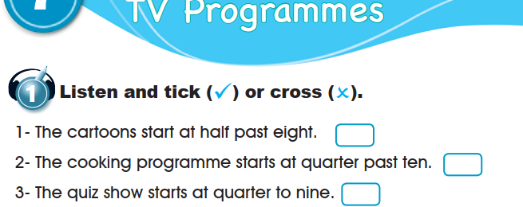
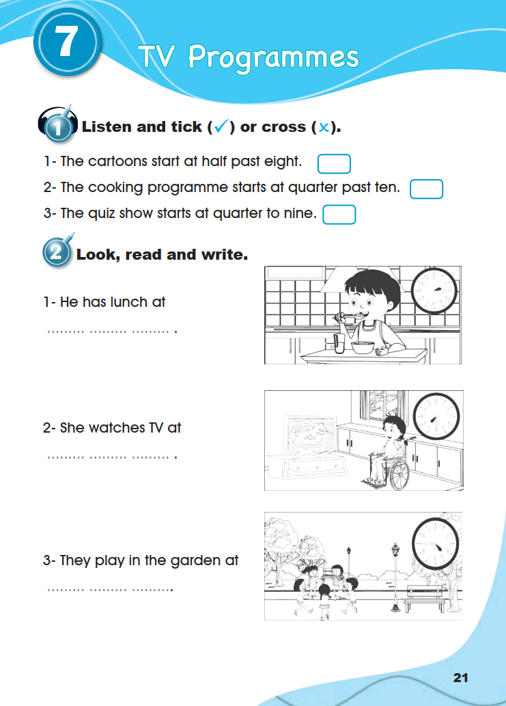
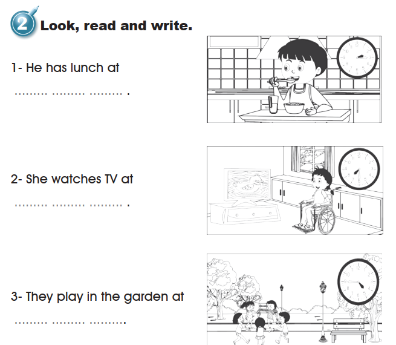
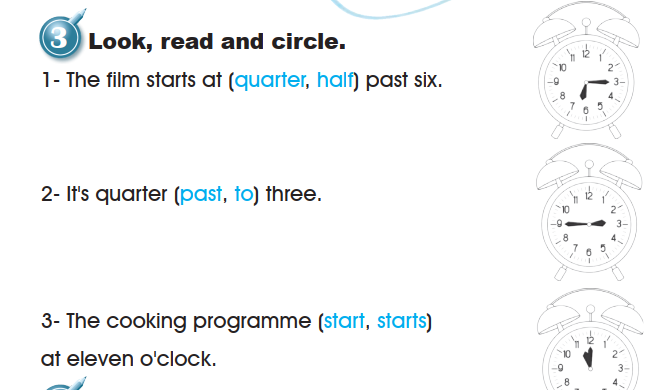
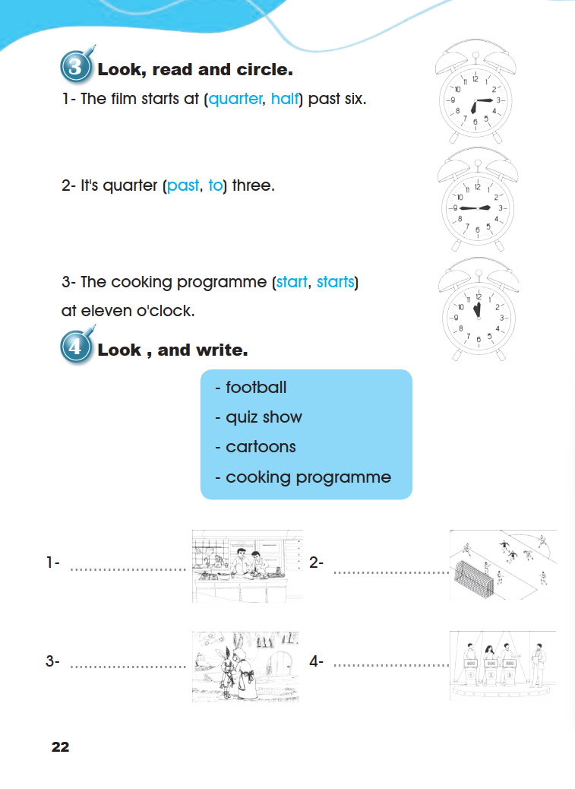
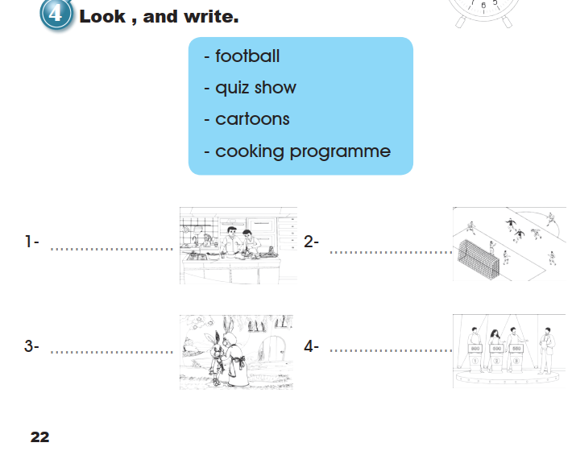
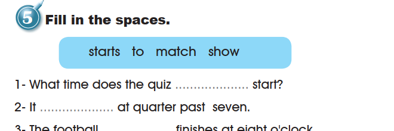
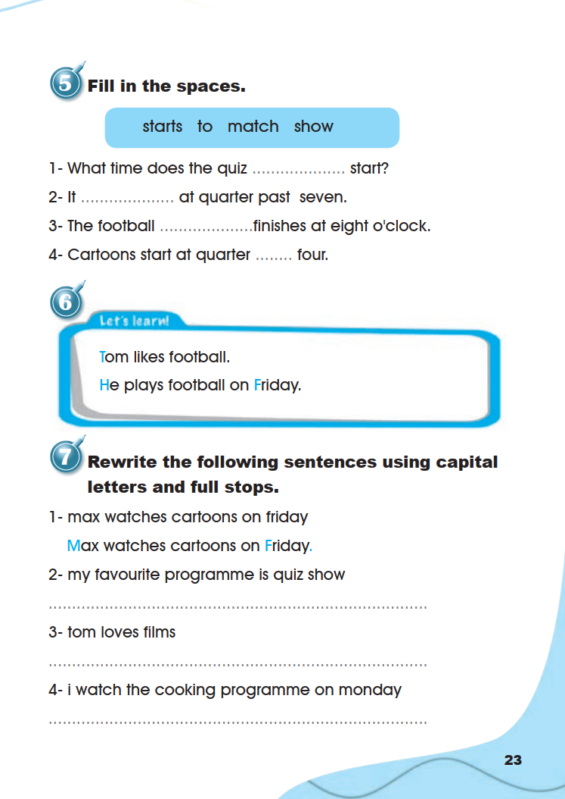
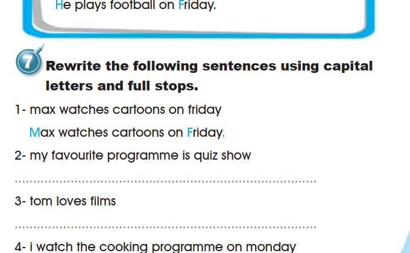

✦ ENGLISH FULL CURRICULUM
← Return to Grade 3 lessonsGRADE 3 · UNIT 1 · LESSON 7
Workbook
TV Programmes · Workbook · pages 21–23. Printed exercises in source order.
Writing practice. Your answers are saved in this browser only, and nothing is marked automatically. Where the book prints no answer key, the model is labelled as inferred or as an example. Your own answer is never overwritten.
1. Listen and tick (✓) or cross (✖).

Open the source page · Workbook · p. 21
The original supplied scan, unchanged.

2. Look, read and write.

Open the source page · Workbook · p. 21
The original supplied scan, unchanged.
3. Look, read and circle.

Open the source page · Workbook · p. 22
The original supplied scan, unchanged.

4. Look , and write.

Open the source page · Workbook · p. 22
The original supplied scan, unchanged.
5. Fill in the spaces.

Open the source page · Workbook · p. 23
The original supplied scan, unchanged.

6. Let’s learn!
Tom likes football.
He plays football on Friday.
7. Rewrite the following sentences using capital letters and full stops.

Open the source page · Workbook · p. 23
The original supplied scan, unchanged.